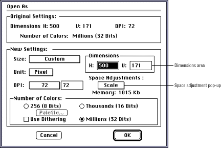

If you want to create a 3DO image (rather than a cel) you may have to clip or scale the source art to 320 x 240 for NTSC screens while opening the file.
For best results, open art with a resolution of more than 16 bits per pixel (millions), at 16 bits per pixel (thousands). Opening an image in 16-bit color helps prevent NTSC hot colors from occurring.
The Open As dialog appears.

Figure 1: 3DO Animator Open As dialog.
Scale-Preserves the aspect ratio of the original document in the new document. If the new document does not have the same aspect ratio, the 3DO Animator tool adds white space.
Fit-Forces the entire original document into the new dimensions, which usually results in some distortion.
Clip-Does not adjust the size but centers as much as
will fit into the dimensions indicated by the new settings.
If you select Clip, you can define the clip parameters in the dialog that
appears.